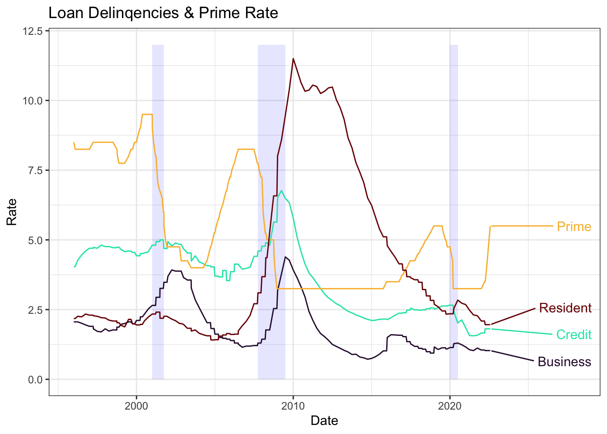

Loan delinquency is the idea that individuals are overdue on loan payments by at least 30 days. The prime rate is the minimum rate that a bank would be willing to lend money to an individual with good credit.
We begin by reading in the data
# Read in datalibrary(zoo)
Attaching package: 'zoo'
The following objects are masked from 'package:base':
as.Date, as.Date.numeric
Warning: `guides(<scale> = FALSE)` is deprecated. Please use `guides(<scale> =
"none")` instead.
line_ends <-ggplot_build(p_loans)$data[[4]] %>%group_by() %>%filter(x==max(x))#add market labelline_ends$Market <- X_long %>%pull(Market) %>%unique() %>%as.character() %>%sort()# add direct labels to graphp_loans <- p_loans + ggrepel::geom_label_repel(data = line_ends, aes(x =as.Date(line_ends$x), y = line_ends$y, label =c("Business","Credit","Prime","Resident")), nudge_x =1000000,label.size=NA,fill =alpha(c("white"),0))p_loans <- p_loans +expand_limits(x =as.Date("2028-01-01"))# Add color palette and adjust themep_loans +scale_color_viridis(option ="turbo", discrete = T) +theme_bw() +# Adjust some detailsggtitle("Loan Delinqencies & Prime Rate") +xlab("Date")

In the chart above, the blue areas represent times of economic recession while each line is either the Prime lending rate or some form of loan delinquency rate.
All data is from the United States Federal Reserve of St. Louis accessed through the FRED economic data portal <a href=“https://fred.stlouisfed.org/#”>here</a>. The datasets used can be found under: